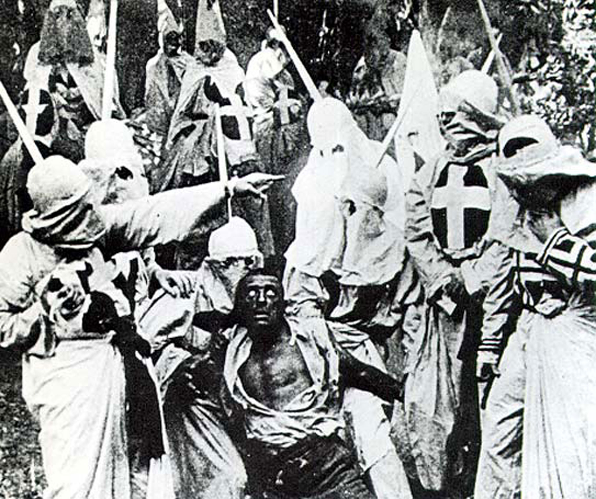
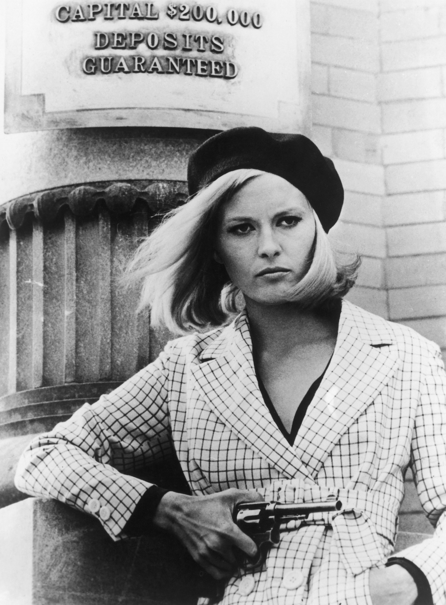

The relationship between movies and culture involves a complicated dynamic; while American movies certainly influence the mass culture that consumes them, they are also an integral part of that culture, a product of it, and therefore a reflection of prevailing concerns, attitudes, and beliefs. In considering the relationship between film and culture, it is important to keep in mind that, while certain ideologies may be prevalent in a given era, not only is American culture as diverse as the populations that form it, but it is also constantly changing from one period to the next. Mainstream films produced in the late 1940s and into the 1950s, for example, reflected the conservatism that dominated the sociopolitical arenas of the time. However, by the 1960s, a reactionary youth culture began to emerge in opposition to the dominant institutions, and these antiestablishment views soon found their way onto screen—a far cry from the attitudes most commonly represented only a few years earlier.
In one sense, movies could be characterized as America’s storytellers. Not only do Hollywood films reflect certain commonly held attitudes and beliefs about what it means to be American, but they also portray contemporary trends, issues, and events, serving as records of the eras in which they were produced. Consider, for example, films about the September 11, 2001, terrorist attacks: Fahrenheit 9/11, World Trade Center, United 93, and others. These films grew out of a seminal event of the time, one that preoccupied the consciousness of Americans for years after it occurred.
In 1915, director D. W. Griffith established his reputation with the highly successful film The Birth of a Nation, based on Thomas Dixon’s novel The Clansman, a prosegregation narrative about the American South during and after the Civil War. At the time, The Birth of a Nation was the longest feature film ever made, at almost 3 hours, and contained huge battle scenes that amazed and delighted audiences. Griffith’s storytelling ability helped solidify the narrative style that would go on to dominate feature films. He also experimented with editing techniques such as close-ups, jump cuts, and parallel editing that helped make the film an artistic achievement.
Griffith’s film found success largely because it captured the social and cultural tensions of the era. As American studies specialist Lary May has argued, “[Griffith’s] films dramatized every major concern of the day.”Lary May, “Apocalyptic Cinema: D. W. Griffith and the Aesthetics of Reform,” in Movies and Mass Culture, ed. John Belton (New Brunswick, NJ: Rutgers University Press, 1997), 26. In the early 20th century, fears about recent waves of immigrants had led to certain racist attitudes in mass culture, with “scientific” theories of the time purporting to link race with inborn traits like intelligence and other capabilities. Additionally, the dominant political climate, largely a reaction against populist labor movements, was one of conservative elitism, eager to attribute social inequalities to natural human differences.“Birth of a Nation,” Encyclopedia of the Social Sciences, 2nd ed., ed. William A. Darity, Jr., Gale Virtual Reference Library, 1:305–306. According to a report by the New York Evening Post after the film’s release, even some Northern audiences “clapped when the masked riders took vengeance on Negroes.”Charles Higham. The Art of the American Film: 1900–1971. (Garden City: Doubleday & Company, 1973), 13. However, the outrage many groups expressed about the film is a good reminder that American culture is not monolithic, that there are always strong contingents in opposition to dominant ideologies.
While critics praised the film for its narrative complexity and epic scope, many others were outraged and even started riots at several screenings because of its highly controversial, openly racist attitudes, which glorified the Ku Klux Klan and blamed Southern blacks for the destruction of the war.Charles Higham. The Art of the American Film: 1900–1971. (Garden City: Doubleday & Company, 1973), 10–11. Many Americans joined the National Association for the Advancement of Colored People (NAACP) in denouncing the film, and the National Board of Review eventually cut a number of the film’s racist sections.Lary May, “Apocalyptic Cinema: D. W. Griffith and the Aesthetics of Reform,” in Movies and Mass Culture, ed. John Belton (New Brunswick, NJ: Rutgers University Press, 1997), 46. However, it’s important to keep in mind the attitudes of the early 1900s. At the time the nation was divided, and Jim Crow laws and segregation were enforced. Nonetheless, The Birth of a Nation was the highest grossing movie of its era. In 1992, the film was classified by the Library of Congress among the “culturally, historically, or aesthetically significant films” in U.S. history.
Figure 8.6
The Birth of a Nation expressed racial tensions of the early 20th century.
Until the bombing of Pearl Harbor in 1941, American films after World War I generally reflected the neutral, isolationist stance that prevailed in politics and culture. However, after the United States was drawn into the war in Europe, the government enlisted Hollywood to help with the war effort, opening the federal Bureau of Motion Picture Affairs in Los Angeles. Bureau officials served in an advisory capacity on the production of war-related films, an effort with which the studios cooperated. As a result, films tended toward the patriotic and were produced to inspire feelings of pride and confidence in being American and to clearly establish that America and its allies were forced of good. For instance, critically acclaimed Casablanca paints a picture of the ill effects of fascism, illustrates the values that heroes like Victor Laszlo hold, and depicts America as a place for refugees to find democracy and freedom.Review of Casablanca, directed by Michael Curtiz, Digital History, http://www.digitalhistory.uh.edu/historyonline/bureau_casablanca.cfm.
These early World War II films were sometimes overtly propagandist, intended to influence American attitudes rather than present a genuine reflection of American sentiments toward the war. Frank Capra’s Why We Fight films, for example, the first of which was produced in 1942, were developed for the U.S. Army and were later shown to general audiences; they delivered a war message through narrative.Clayton R. Koppes and Gregory D. Black, Hollywood Goes to War: How Politics, Profits and Propaganda Shaped World War II Movies (Los Angeles: The Free Press, 1987), 122. As the war continued, however, filmmakers opted to forego patriotic themes for a more serious reflection of American sentiments, as exemplified by films like Alfred Hitchcock’s Lifeboat.
In Mike Nichols’s 1967 film The Graduate, Dustin Hoffman, as the film’s protagonist, enters into a romantic affair with the wife of his father’s business partner. However, Mrs. Robinson and the other adults in the film fail to understand the young, alienated hero, who eventually rebels against them. The Graduate, which brought in more than $44 million at the box office, reflected the attitudes of many members of a young generation growing increasingly dissatisfied with what they perceived to be the repressive social codes established by their more conservative elders.Tim Dirks, review of The Graduate, directed by Mike Nichols, Filmsite, http://www.filmsite.org/grad.html.
This baby boomer generation came of age during the Korean and Vietnam wars. Not only did the youth culture express a cynicism toward the patriotic, prowar stance of their World War II–era elders, but they displayed a fierce resistance toward institutional authority in general, an antiestablishmentism epitomized in the 1967 hit film Bonnie and Clyde. In the film, a young, outlaw couple sets out on a cross-country bank-robbing spree until they’re killed in a violent police ambush at the film’s close.John Belton, American Cinema/American Culture. (New York: McGraw-Hill, 1994), 286.
Figure 8.7
Bonnie and Clyde reflected the attitudes of a rising youth culture.
Bonnie and Clyde’s violence provides one example of the ways films at the time were testing the limits of permissible on-screen material. The youth culture’s liberal attitudes toward formally taboo subjects like sexuality and drugs began to emerge in film during the late 1960s. Like Bonnie and Clyde, Sam Peckinpah’s 1969 Western The Wild Bunch, displays an early example of aestheticized violence in film. The wildly popular Easy Rider (1969)—containing drugs, sex, and violence—may owe a good deal of its initial success to liberalized audiences. And in the same year, Midnight Cowboy, one of the first Hollywood films to receive an X rating (in this case for its sexual content), won three Academy Award awards, including Best Picture.John Belton, American Cinema/American Culture. (New York: McGraw-Hill, 1994), 288–89. As the release and subsequently successful reception of these films attest, what at the decade’s outset had been countercultural had, by the decade’s close, become mainstream.
When the MPAA (originally MPPDA) first banded together in 1922 to combat government censorship and to promote artistic freedom, the association attempted a system of self-regulation. However, by 1930—in part because of the transition to talking pictures—renewed criticism and calls for censorship from conservative groups made it clear to the MPPDA that the loose system of self-regulation was not enough protection. As a result, the MPPDA instituted the Production Code, or Hays Code (after MPPDA director William H. Hays), which remained in place until 1967. The code, which according to motion picture producers concerned itself with ensuring that movies were “directly responsible for spiritual or moral progress, for higher types of social life, and for much correct thinking,”“Complete Nudity is Never Permitted: The Motion Picture Code of 1930,” http://historymatters.gmu.edu/d/5099/. was strictly enforced starting in 1934, putting an end to most public complaints. However, many people in Hollywood resented its restrictiveness. After a series of Supreme Court cases in the 1950s regarding the code’s restrictions to freedom of speech, the Production Code grew weaker until it was finally replaced in 1967 with the MPAA rating system.“The Production Code of the Motion Picture Producers and Distributers of America, Inc.—1930–1934,” American Decades Primary Sources, ed. Cynthia Rose (Detroit: Gale, 2004), vol. 4, 12–15.
As films like Bonnie and Clyde and Who’s Afraid of Virginia Woolf? (1966) tested the limits on violence and language, it became clear that the Production Code was in need of replacement. In 1968, the MPAA adopted a ratings sytem to identify films in terms of potentially objectionable content. By providing officially designated categories for films that would not have passed Production Code standards of the past, the MPAA opened a way for films to deal openly with mature content. The ratings system originally included four categories: G (suitable for general audiences), M (equivalent to the PG rating of today), R (restricted to adults over age 16), and X (equivalent to today’s NC-17).
The MPAA rating systems, with some modifications, is still in place today. Before release in theaters, films are submitted to the MPAA board for a screening, during which advisers decide on the most apropriate rating based on the film’s content. However, studios are not required to have the MPAA screen releases ahead of time—some studios release films without the MPAA rating at all. Commercially, less restrictive ratings are generally more beneficial, particularly in the case of adult-themed films that have the potential to earn the most restrictive rating, the NC-17. Some movie theaters will not screen a movie that is rated NC-17. When filmmakers get a more restrictive rating than they were hoping for, they may resubmit the film for review after editing out objectionable scenes.Kirby Dick, interview by Terry Gross, Fresh Air, NPR, September 13, 2006, http://www.npr.org/templates/story/story.php?storyId=6068009.
Unlike the patriotic war films of the World War II era, many of the films about U.S. involvement in Vietnam reflected strong antiwar sentiment, criticizing American political policy and portraying war’s damaging effects on those who survived it. Films like Dr. Strangelove (1964), M*A*S*H (1970), The Deer Hunter (1978), and Apocalypse Now (1979) portray the military establishment in a negative light and dissolve clear-cut distinctions, such as the “us versus them” mentality, of earlier war films. These, and the dozens of Vietnam War films that were produced in the 1970s and 1980s—Oliver Stone’s Platoon (1986) and Born on the Fourth of July (1989) and Stanley Kubrick’s Full Metal Jacket (1987), for example—reflect the sense of defeat and lack of closure Americans felt after the Vietnam War and the emotional and psychological scars it left on the nation’s psyche.Tim Dirks, “1980s Film History,” Filmsite, 2010, http://www.filmsite.org; Michael Anderegg, introduction to Inventing Vietnam: The War in Film and Television, ed. Michael Anderegg (Philadelphia: Temple University Press, 1991), 6–8. A spate of military and politically themed films emerged during the 1980s as America recoverd from defeat in Vietnam, while at the same time facing anxieties about the ongoing Cold War with the Soviet Union.
Fears about the possibility of nuclear war were very real during the 1980s, and some film critics argue that these anxieties were reflected not only in overtly political films of the time but also in the popularity of horror films, like Halloween and Friday the 13th, which feature a mysterious and unkillable monster, and in the popularity of the fantastic in films like E.T.: The Extra-Terrestrial, Raiders of the Lost Ark, and Star Wars, which offer imaginative escapes.Robin Wood, Hollywood from Vietnam to Reagan (New York: Columbia University Press, 1986), 168.
Just as movies reflect the anxieties, beliefs, and values of the cultures that produce them, they also help to shape and solidify a culture’s beliefs. Sometimes the influence is trivial, as in the case of fashion trends or figures of speech. After the release of Flashdance in 1983, for instance, torn T-shirts and leg warmers became hallmarks of the fashion of the 1980s.Diana Pemberton-Sikes, “15 Movies That Inspired Fashion Trends,” The Clothing Chronicles, March 3, 2006, http://www.theclothingchronicles.com/archives/217-03032006.htm. However, sometimes the impact can be profound, leading to social or political reform, or the shaping of ideologies.
During the 1890s and up until about 1920, American culture experienced a period of rapid industrialization. As people moved from farms to centers of industrial production, urban areas began to hold larger and larger concentrations of the population. At the same time, film and other methods of mass communication (advertising and radio) developed, whose messages concerning tastes, desires, customs, speech, and behavior spread from these population centers to outlying areas across the country. The effect of early mass-communication media was to wear away regional differences and create a more homogenized, standardized culture.
Film played a key role in this development, as viewers began to imitate the speech, dress, and behavior of their common heroes on the silver screen.Steven Mintz, “The Formation of Modern American Mass Culture,” Digital History, 2007, http://www.digitalhistory.uh.edu/database/article_display.cfm?HHID=455. In 1911, the Vitagraph company began publishing The Motion Picture Magazine, America’s first fan magazine. Originally conceived as a marketing tool to keep audiences interested in Vitagraph’s pictures and major actors, The Motion Picture Magazine helped create the concept of the film star in the American imagination. Fans became obsessed with the off-screen lives of their favorite celebrities, like Pearl White, Florence Lawrence, and Mary Pickford.Jack Doyle, “A Star is Born: 1910s,” Pop History Dig, 2008, http://www.pophistorydig.com/?tag=film-stars-mass-culture.
American identity in mass society is built around certain commonly held beliefs, or myths about shared experiences, and these American myths are often disseminated through or reinforced by film. One example of a popular American myth, one that dates back to the writings of Thomas Jefferson and other founders, is an emphasis on individualism—a celebration of the common man or woman as a hero or reformer. With the rise of mass culture, the myth of the individual became increasingly appealing because it provided people with a sense of autonomy and individuality in the face of an increasingly homogenized culture. The hero myth finds embodiment in the Western, a film genre that was popular from the silent era through the 1960s, in which the lone cowboy, a seminomadic wanderer makes his way in a lawless, and often dangerous, frontier. An example is 1952’s High Noon. From 1926 until 1967, Westerns accounted for nearly a quarter of all films produced. In other films, like Frank Capra’s 1946 movie It’s a Wonderful Life, the individual triumphs by standing up to injustice, reinforcing the belief that one person can make a difference in the world.John Belton, introduction to Movies and Mass Culture, ed. John Belton, 12. And in more recent films, hero figures such as Indiana Jones, Luke Skywalker (Star Wars), and Neo (The Matrix) have continued to emphasize individualism.
As D. W. Griffith recognized nearly a century ago, film has enormous power as a medium to influence public opinion. Ever since Griffith’s The Birth of a Nation sparked strong public reactions in 1915, filmmakers have been producing movies that address social issues, sometimes subtly, and sometimes very directly. More recently, films like Hotel Rwanda (2004), about the 1994 Rwandan genocide, or The Kite Runner (2007), a story that takes place in the midst of a war-torn Afghanistan, have captured audience imaginations by telling stories that raise social awareness about world events. And a number of documentary films directed at social issues have had a strong influence on cultural attitudes and have brought about significant change.
In the 2000s, documentaries, particularly those of an activist nature, were met with greater interest than ever before. Films like Super Size Me (2004), which documents the effects of excessive fast-food consumption and criticizes the fast-food industry for promoting unhealthy eating habits for profit, and Food, Inc. (2009), which examines corporate farming practices and points to the negative impact these practices can have on human health and the environment, have brought about important changes in American food culture.Kim Severson, “Eat, Drink, Think, Change,” New York Times, June 3, 2009, http://www.nytimes.com/2009/06/07/movies/07seve.html. Just 6 weeks after the release of Super Size Me, McDonald’s took the supersize option off its menu and since 2004 has introduced a number of healthy food options in its restaurants.Suemedha Sood, “Weighing the Impact of ‘Super Size Me,’” Wiretap, June 29, 2004. http://www.wiretapmag.org/stories/19059/. Other fast-food chains have made similar changes.Suemedha Sood, “Weighing the Impact of ‘Super Size Me,’” Wiretap, June 29, 2004. http://www.wiretapmag.org/stories/19059/.
Other documentaries intended to influence cultural attitudes and inspire change include those made by director Michael Moore. Moore’s films present a liberal stance on social and political issues such as health care, globalization, and gun control. His 2002 film Bowling for Columbine, for example, addressed the Columbine High School shootings of 1999, presenting a critical examination of American gun culture. While some critics have accused Moore of producing propagandistic material under the label of documentary because of his films’ strong biases, his films have been popular with audiences, with four of his documentaries ranking among the highest grossing documentaries of all time. Fahrenheit 9/11 (2004), which criticized the second Bush administration and its involvement in the Iraq War, earned $119 million at the box office, making it the most successful documentary of all time.Tim Dirks, “Film History of the 2000s,” Filmsite; Washington Post, “The 10 Highest-Grossing Documentaries,” July 31, 2006, http://www.washingtonpost.com/wp-dyn/content/graphic/2006/07/31/GR2006073100027.html.